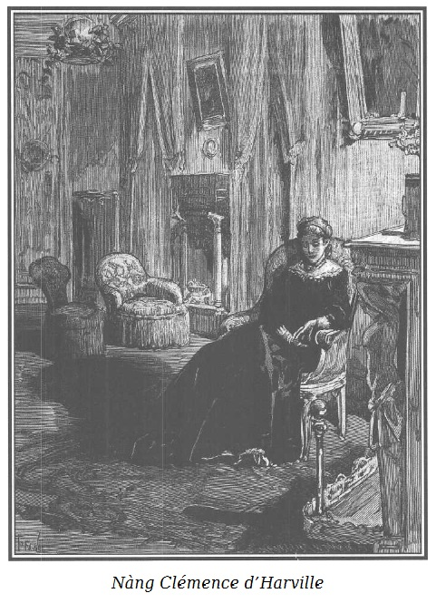

Bạn đọc sẽ thứ lỗi cho tác giả đã gác lại chuyện một trong những nữ nhân vật của chúng ta đang trong tình thế cực kỳ hiểm nguy, mà sau này, chúng tôi sẽ trình bày rõ kết cục.
Những yêu cầu phức tạp của câu chuyện này, quá đa dạng trong sự thống nhất của nó, đã buộc chúng tôi chuyển từ nhân vật này qua nhân vật khác; trong chừng mực lệ thuộc của chúng tôi, nhằm thúc đẩy hứng thú chung của tác phẩm.
Chúng ta hẳn còn nhớ, trước hôm xảy ra những sự kiện vừa kể, cô bé Sơn Ca bị mụ Vọ bắt cóc, Rodolphe đã cứu bà d’Harville qua khỏi một tai nạn ghê gớm, tai nạn gây nên bởi lòng ghen tức. Sarah đã báo cho ông d’Harville về buổi hẹn hò mà bà Hầu tước đã khinh suất thỏa thuận với gã Charles Robert.
Rodolphe vô cùng xúc động về cảnh tượng ấy. Sau khi rời khỏi ngôi nhà phố Temple để trở về nhà, hoãn đến hôm sau cuộc viếng thăm mà ông dự định dành cho cô Rigolette và gia đình người thợ thủ công khốn khổ mà chúng tôi đã nói, bởi lẽ ông tin họ đã qua cơn túng quẫn nhờ số tiền mà ông đưa bà Hầu tước đem tới cho họ, để làm cho cuộc viếng thăm từ thiện của bà có vẻ thật hơn dưới mắt ông d’Harville. Khốn nỗi, Rodolphe không biết chuyện thằng Tập Tễnh đã cướp mất túi tiền ấy, và chúng ta đã biết thằng bé ấy thực hiện vụ trộm táo tợn thế nào…
Vào khoảng bốn giờ chiều, ông Công tước nhận được bức thư sau đây. Một người đàn bà có tuổi đã đưa thư đến và đi ngay không đợi phúc đáp.
“Kính trình Điện hạ!
Tôi đội ơn Điện hạ không sao kể xiết, ngay hôm nay tôi muốn được trình bày cùng Điện hạ lòng biết ơn sâu sắc của tôi. Ngày mai, có thể nỗi hổ thẹn sẽ làm tôi khó nói nên lời. Nếu Điện hạ có thể dành cho tôi vinh dự đến nhà tôi tối nay, Điện hạ sẽ kết thúc ngày hôm nay, cũng như ngài đã bắt đầu nó, thưa Điện hạ, bằng một hành vi hào hiệp.
D’ORBIGNY-D’HARVILLE
Tái bút: Điện hạ không phải phiền lòng nghĩ đến hồi âm, tôi sẽ ở nhà cả tối hôm nay.”
Rodolphe sung sướng được giúp bà d’Harville một công việc lớn lao, tuy vậy rất tiếc về sự thân tình ép buộc mà tình huống này tạo dựng nên giữa ông và bà Hầu tước.
Không thể phản bội tình bạn của ông d’Harville, nhưng lại vô cùng xúc động trước sự duyên dáng đầy trí tuệ và vẻ đẹp làm say lòng người của Clémence, Rodolphe nhận rõ lòng yêu thích quá nồng nhiệt đối với nàng, đã hầu như khước từ việc gặp lại nàng, sau một tháng liên tục viếng thăm.
Bởi vậy ông xúc động nhớ tới cuộc trao đổi mà ông bất ngờ nghe được tại sứ quán giữa Tom và Sarah… Bà ta, do nỗi căm tức và lòng ghen tuông có lý do chính đáng, đã khẳng định, không phải là không duyên cớ, là bà d’Harville đã luôn luôn cảm thấy, có lẽ nàng cũng không ngờ tới, một cảm tình sâu sắc đối với Rodolphe. Sarah rất minh mẫn, rất tinh tế, rất am tường trong nhận thức rằng Clémence tự coi như bị quên lãng, thậm chí bị coi thường bởi một người đã tạo nên ở nàng một ấn tượng sâu đậm, rằng Clémence, trong lúc giận hờn, đã nhượng bộ trước những lời vật nài của một người bạn nham hiểm, đã có thể lưu tâm đến những nỗi khổ đau tưởng tượng của Charles Robert nhưng không vì thế mà hoàn toàn quên lãng Rodolphe.
Những thiếu phụ khác trung thành với kỷ niệm về người họ đã quý mến, sẽ có thái độ vô tình đối với viên tư lệnh. Clémence d’Harville như vậy là phạm tội gấp đôi, mặc dù chỉ vì thương một kẻ khổ đau mà nhượng bộ và một tình cảm mãnh liệt về nghĩa vụ. Thêm vào đấy, kỷ niệm về vị Công tước, kỷ niệm đáng giá luôn luôn thức tỉnh trong trái tim nàng, đã giữ cho nàng khỏi phạm một lầm lỗi không cứu chữa được. Rodolphe nghĩ đến cuộc hội kiến với bà d’Harville, khi thì ông thấy mình sung sướng đã có thể không yêu nàng, chê trách nàng đã có một sự lựa chọn đáng giận như trong chuyện gã Charles Robert, khi thì, ngược lại, ông nuối tiếc lòng kính nể mà trước nay ông vẫn giữ với nàng, nó đã không còn nữa…
Clémence d’Harville cũng chờ đợi với biết bao lo lắng cuộc hội kiến ấy, hai thứ tình cảm chiếm ưu thế ở nàng là một nỗi hổ thẹn đau đớn khi nàng nghĩ đến Rodolphe, một sự kinh tởm ghê người khi nàng nghĩ đến Charles Robert. Nhiều lý do là nguyên nhân của sự kinh tởm, của mối hận thù này.
Một người phụ nữ có thể bỏ cả yên vui, danh dự vì một người đàn ông, nhưng họ không bao giờ có thể tha thứ, nếu một người đưa họ vào một tình thế nhục nhã hoặc lố bịch.
Vậy mà bà d’Harville đã phải điên đầu với những lời mỉa mai và với những cái nhìn lăng mạ của bà Pipelet, cơ hồ chết vì hổ thẹn. Thế đã hết đâu!
Nhận được ở Rodolphe tín hiệu của mối hiểm nguy trước mắt, Clémence vội vã lên tầng năm, cái hướng của bậc thang được kiến trúc theo kiểu mà khi bước lên thang nàng đã thấy Charles Robert trong chiếc áo dài mặc trong nhà choáng lộn, và lúc nhận ra bước đi nhẹ nhàng của người đàn bà mà gã đợi chờ, gã tươi tỉnh mở hé cánh cửa, tự tin và tự đắc… tính hợm hĩnh láo xược do bộ y phục của gã đem lại đã làm cho bà Hầu tước thấy mình đã lầm lẫn thô bạo về con người này biết bao! Phó mặc trái tim nhân hậu và tấm lòng hào hiệp lôi cuốn tới một tình hình làm tiêu tan danh dự của nàng, nàng đã thỏa thuận có cuộc hò hẹn này không phải vì yêu đương mà chỉ đơn thuần vì lòng trắc ẩn để an ủi gã, về vai trò lố bịch mà sự bất nhã của Công tước de Lucenay đã làm gã ta phải gánh chịu trước mặt nàng, tại sứ quán…
Người ta đoán được nỗi thất vọng, sự kinh tởm của bà d’Harville khi thấy Charles Robert ăn mặc như người chiến thắng.
Chiếc đồng hồ treo trong phòng khách nhỏ mà bà d’Harville thường ngồi vừa điểm chín giờ.
Không còn gì thanh lịch và tao nhã hơn đồ đạc bày biện trong phòng khách nơi bà Hầu tước chờ đợi Rodolphe.
Các màn trống không điểm cũng không xếp nếp, đều bằng thứ vải Ấn Độ màu rơm, trên nền sáng ấy chạy những đường lượn bằng lụa cùng màu, trông thật đẹp mắt và phóng túng. Những tấm màn đôi dệt kim vùng Alençon che khuất tấm kính.
Các tấm cửa bằng gỗ cẩm lai, được tân trang bởi những đường chỉ mạ bạc mạ vàng, chạm trổ tinh vi, đóng khung trong mỗi tấm một bức họa hình bầu dục bằng sứ miền Sèvres, đường kính gần một pied biểu hiện chim chóc và hoa lá với sự hoàn chỉnh và sắc thái kỳ diệu. Các đường viền những tấm gương và đường nẹp các màn trướng cũng bằng gỗ cẩm lai được tô nổi lên bằng những hoa văn tương tự bằng bạc mạ vàng.
Hai giá đèn sáp nhiều ngọn và hai cây đuốc sơn son do Gouthière dày công tạo dựng kèm theo chiếc đồng hồ, khối hình vuông đá lam ngọc đựng lên trên một cái bệ thạch anh phương Đông, có một chiếc cốc vàng tráng men dát hạt trai và hồng ngọc đặt lên trên, thuộc vào thời kỳ thịnh trị của nền Phục hưng Florence.
Khá nhiều bức họa tuyệt vời của trường phái Venice, cỡ trung bình, hoàn tất một tổng thể cực kỳ lộng lẫy.
Chúng tôi nhấn mạnh chi tiết này có thể là quá tỉ mỉ, để đưa ra một ý niệm về khiếu thẩm mỹ tự nhiên của bà d’Harville và bởi một số điều đau thương thầm lặng, một số tai họa bí ẩn dường như tha thiết hơn mỗi khi chúng tương phản với thứ bên ngoài hiện ra trước mắt mọi người của một cuộc đời sung sướng, được nhiều người ao ước.

.Ngồi lọt thỏm trong chiếc ghế bành lớn, bọc hoàn toàn bằng vải màu rơm, như tất cả các đồ dùng khác, Clémence d’Harville vấn tóc trần, mang một chiếc áo nhung đen cổ rộng và đôi cửa tay phẳng lật ngửa may theo kiểu Anh đã có tác dụng tuyệt vời là ngăn cản màu đen của nhung tương phản một cách phũ phàng với nước da trắng nõn của đôi tay và chiếc cổ.
Càng gần tới phút hội ngộ với Rodolphe, cảm xúc của bà Hầu tước càng tăng lên gấp bội. Tuy vậy, sự ngượng ngùng của nàng nhường chỗ cho những quy định quả quyết. Sau khi suy nghĩ kĩ càng, nàng quyết định trao cho Rodolphe một điều bí mật lớn, một điều bí mật phũ phàng, hy vọng tấm lòng chân thành cao đẹp của nàng có thể thu phục được một sự trân trọng mà nàng rất mực thiết tha.
Được tiếp sức bởi lòng biết ơn, thiên hướng đầu tiên của nàng đối với Rodolphe được thức tỉnh với một sức lực mới. Một trong những linh cảm mới ít khi lừa dối những trái tim yêu đương đã cho nàng biết là không phải chỉ riêng sự tình cờ đã dẫn vị Công tước này đến đúng lúc để cứu nàng, và đã từ mấy tháng nay thôi đến thăm nàng, ông đã để lại cho nàng một tình cảm khác hẳn với sự sám hối xâm chiếm. Một bản năng mơ hồ đã gợi lên trong ý nghĩ của Clémence những ngờ vực về sự trung thực trong tình thương mến của Sarah.
Khoảng vài phút sau, một người hầu phòng, sau khi nhẹ nhàng gõ cửa, bước vào nói với Clémence:
- Hầu tước phu nhân có thể tiếp bà Asthon và tiểu thư không?
- Được chứ, như thường lệ, - bà d’Harville trả lời.
Và con gái nàng từ từ đi vào phòng khách.
Đó là một em bé bốn tuổi, có thể rất xinh xẻo nếu không xanh xao vì bệnh tật và không quá gầy gò. Bà Asthon, bà bảo mẫu, cầm tay em. Claire mặc dù yếu đuối vội vã chạy về phía mẹ, đôi tay dang rộng. Hai chiếc nơ có dải màu anh đào buộc hai bên trán, em bé yếu đến mức phải mặc một chiếc áo choàng bông lụa nâu thay cho chiếc áo mousseline trắng có dải lụa như trên mái tóc, và để hở vai, qua đây người ta có thể trông thấy đôi cánh tay hồng, đôi vai tươi mát và đôi môi bóng rất dễ thương như ở những trẻ em khỏe mạnh.
Đôi mắt to đen của em bé đặt trên đôi má hóp dường như to hơn. Mặc dù vẻ ngoài suy yếu, một nụ cười xinh xắn và duyên dáng làm rạng rỡ những đường nét của Claire khi nó được đặt trong lòng mẹ đang hôn nó với niềm âu yếm đượm buồn nhưng say đắm.
- Con bé từ chiều đến giờ thế nào, bà Asthon? - Bà d’Harville hỏi người bảo mẫu.
- Thưa Hầu tước phu nhân, cũng khá, mặc dù có lúc tôi sợ…
- Còn thế nữa ư! - Clémence kêu lên, ôm chặt con gái vào lòng với một cử động khiếp sợ không chủ ý.
- Thưa phu nhân, may quá, tôi đã lầm, - bà bảo mẫu nói - tiểu thư Claire không lên cơn, tiểu thư chỉ hơi khó chịu một chút… Trưa nay tiểu thư ít ngủ, nhưng tiểu thư không muốn đi nằm khi chưa tới hôn Hầu tước phu nhân.
- Ôi, thiên thần bé bỏng yêu quý tội nghiệp! - Bà d’Harville vừa nựng vừa hôn lấy hôn để con gái.
Cô bé vuốt ve mẹ với một niềm vui thơ dại khi người hầu phòng mở rộng hai cánh cửa căn phòng khách và báo:
- Đức ông Điện hạ Đại công tước Gerolstein!
Claire ngồi trong lòng mẹ, đưa hai tay vòng qua cổ mẹ và âu yếm hôn mẹ.
Trông thấy Rodolphe, Clémence đỏ mặt, nhẹ nhàng đặt con trên tấm thảm, ra hiệu cho bà Asthon dẫn cô con gái nhỏ đi, và đứng dậy:
- Xin phu nhân cho phép tôi, - Rodolphe vừa nói vừa mỉm cười, sau khi đã kính cẩn chào bà Hầu tước - được làm quen lại với cô bạn nhỏ bé của tôi, mà tôi rất sợ là đã quên tôi rồi.
Và hơi ngả người xuống, ông đưa bàn tay cho Claire.
Cô bé lúc đầu giương đôi mắt đen tròn chăm chú nhìn ông, rồi khi nhận ra ông, cô bé thân thiện gật đầu và lấy đầu mấy ngón tay gầy guộc gửi tới ông một cái hôn.
- Con có nhận ra Điện hạ không con? - Clémence hỏi Claire.
Cô bé gật đầu khẳng định, và lại gửi một cái hôn nữa tới Rodolphe.
- Sức khỏe của cô bé dường như có khá hơn từ ngày tôi không gặp lại. - Rodolphe tỏ rõ sự quan tâm hỏi Clémence.
- Cháu có khá hơn chút ít, thưa Điện hạ, tuy nhiên vẫn đau ốm luôn.
Bà Hầu tước và vị Công tước, cả hai đều lúng túng khi nghĩ đến cuộc hội kiến sắp diễn ra, rất vui thích thấy nó lui lại ít phút do sự có mặt của Claire nhưng bà bảo mẫu đã lặng lẽ dẫn cô bé đi, trong phòng chỉ còn lại Rodolphe và Clémence.